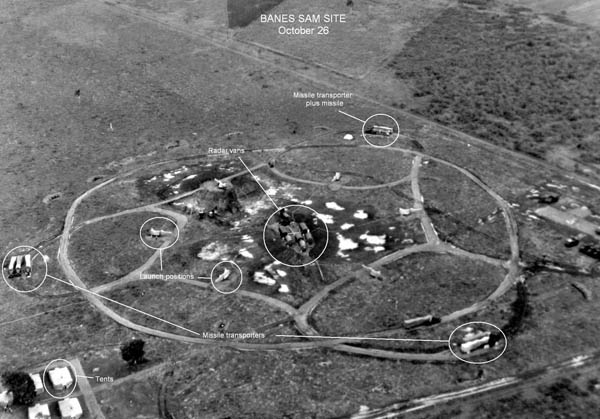
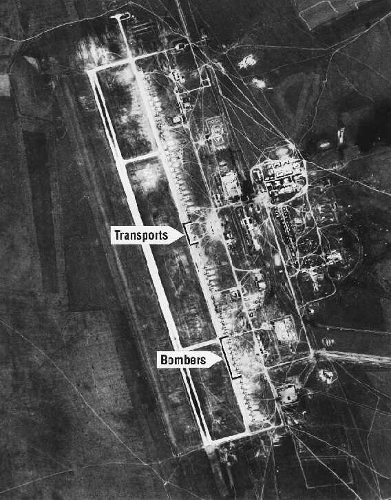
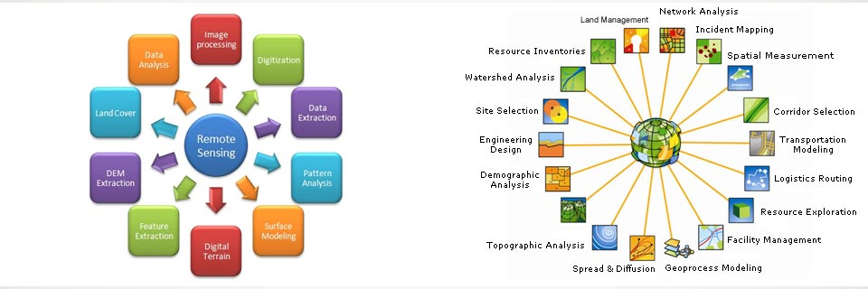
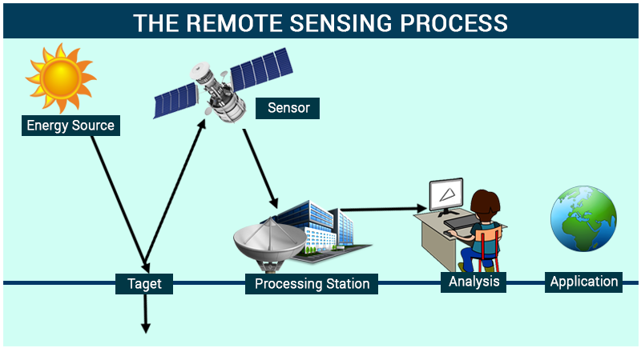
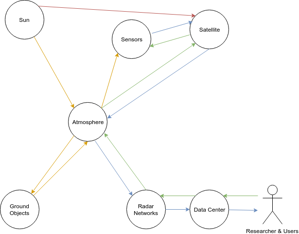

Unravelling Complexity of the Earth from Space
- Liyao Tang (u6142160)
Motivation
I am doing a research project in this domain and realise that it is an invaluable chance for me to analyse the development, current status and the future of this realm, using the theory studied throughout our courses.
Definition of Remote Sensing
To start with, I will first introduce some well-known definition for remote sensing. Remote sensing has been defined by many times with different emphasis. An excessively definition of remote sensing can be given as the gathering of information at a distance [1]. Yet in current usage, the term "remote sensing" generally refers to the use of satellite- or aircraft-based sensor technologies to detect and classify objects on Earth.
Remote sensing can be concluded into two facets, which are acquiring information through a device and the analysis of the acquired data [2]. Regarding data acquisition, remote sensing uses electromagnetic (EM) radiation from an overhead perspective in one or more regions of the electromagnetic spectrum, reflected or emitted from the Earth’s surface [1]. With the thought of how we may utilize the acquired information, information principles provide that information is potentially available at altitude from the Earth's surface, and particular from the spectral, spatial and temporal variations of those fields [3].
History of The Development
Background - Game of the Cold War
The development of remote sensing originates to the biggest game ever existed on the Earth, the cold war. As fictional as it might sound, the game of the cold war is to win the dominance over the world and the player was the Soviet and the U.S.
To achieve the goal, one important means is to have dominant military force over the opposite, where the nuclear weapon was the main component for such military force because of its destructive force. Though it is known that nuclear weapons are able to completely destroy the world, both U.S. and Soviet took another view, which is nuclear wining, instead of nuclear destruction.
The reason behind the scene is that, if a nation is able to fully eliminate another nation's retaliatory forces with a surprise, devastating first strike, then it can theoretically win the nuclear war unharmed. Such statement is primarily formulated by Robert McNamara, United States Secretary of Defense at the time. The idea was also extended into that a nation may win a nuclear war if it can recover and develop faster than its opponents after the nuclear war. As a result, the concept of mutual assured destruction was proposed and accepted; and a prisoner dilemma was formed. In such specific dilemma, both parties do not trust each other, thus making them act based on their own information; and anyone who has less nuclear force would be disadvantaged while building more and more nuclear weapons and related service can bring a heavy burden onto their societies.
As in the dilemma, two players, Soviet and U.S., chose not to cooperate. However, they soon found out that the prisoner dilemma they faced is a dynamic game with asymmetric information [15], where they both do not know the exact information of each other; unlike in traditional prisoner dilemma, where both people know there outcome before the action.
Consequently, both countries would like to detect more information of each other, especially the missiles placement and other fundamental facilities, because more information they gained more prepared and confident they would be. As a result, remote sensing became an extremely active area at the time.
Remote Sensing - A Focus in The Game
In this section, we will walk through an example of how the game of cold war was played by U.S. and Soviet, while realising the reason for remote sensing becoming a focus in the game.
It is worth noting that another important features of the game of cold war is that the game was largely played sequentially i.e. one player moves and then the other player moves and so on and so forth. Whereas in the traditional prisoner dilemma, two players would not see others action before they made the their own decisions. In the other word, in traditional prisoner dilemma, decisions for players are made simultaneously while in the cold war it was more often act and react, where one player's decision influenced the other player and interaction played a key role.
A famous example is CORONA Program, in which U.S. launched a series of reconnaissance satellite to monitor the Soviet Union. The CORONA program was preceded by U-2 Aircraft Reconnaissance Program [4], in which U.S. developed a reconnaissance plane, U-2, to collect the military information in Soviet's large land mass using a high-resolution camera at an altitude higher than any other flights at that time. After detecting the aircraft on its land, Soviet reacted with developing a new missile and then shot down the aircraft. Later, brought to the negotiations by Soviet, U.S. agreed to never to fly a reconnaissance plane across the Soviet Union again in a trade-off, since U.S. realised aircraft could not bring it a steady inspection.
|  |
|---|
| U.S. Air Force reconnaissance planes overflew the Banes site on October 26, 1962, and photographed Soviet SAM missiles in launching position, from [5]. |
To overcome the situation, the CORONA program [6] was put under the focus. The program launched a crowd of satellites and successfully recorded detail image of the "denied area", where spy planes are not allowed. Later, the satellite demonstrated its ability to cover much more land mass and to record information in more detail. In the program, a series of technologies are developed, including sensing and imagery recover, which later revolutionized the remote sensing field.
Afterwards, Soviet also developed its own spy satellites, known as Zenit. Since then, both party started to form a trusted estimation of the status of each other. Personally, I propose that such process of information acquiring helped U.S. and Soviet come back to table of negotiation, from the perspective of game theory.
Nowadays, remote sensing relies more and more on satellites due to its coverage, consistency and high resolution.
|  |
|---|
| Image taken by CORONA satellite, from [7]. |
Current Status of Remote Sensing
Application - What Complexities do Remote Sensing Reveal?
In this section, I am going to discuss the use of remote sensing in multiple realms and the change brought by it, and also some state-of-the-art works in the related fields.
Apart from its initial military use introduced above, it also serves an important role in the Earth monitoring, geographic information system (GIS) and hazard assessment and is a classic field where interdisciplinary studies occur. A graph is shown below to briefly describe its related fields.
|  |
|---|
| Image on the left summarises the range of research realms crossing with remote sensing; and image on the right summarises various application supported by remote sensing technology [16]. |
When researchers from other backgrounds realise the value of remote sensing data, remote sensing becomes a playground of interdisciplinarity. For example, researchers from Economy built a model to estimate the economic growth (GDP growth) of a country using its light-night images. They found this approach is especially useful when the country's economic record is not accessible or incomplete. At last they revealed sub-Saharan Africa coastal areas have not grown faster than non-coastal areas over the last 17 years [13]. Researchers studying ocean animals also found their interests in remote sensing, which can be used to monitor the back-foraging whales [12]. Those researchers address the concern for the future of the right whales, which is raised by extreme right whale calf mortality events at Península Valdés. Besides, researchers in international poverty realm used satellite images to detect the roof of house in villages in South Africa, which indicates the local poverty. With a satellite images record going back into the past decades, researchers step further to use their 'roof counts' as a notation of poverty and analysed the effect of economy policy and financial aids on those areas over those years.
Technology - How does Remote Sensing Unravel the Complexity?
In this section, I am going to apply the network theory to revealing how the satellites sense objects on ground at a distance of several hundred thousand kilometres high above the Earth and what challenges it faces.
Although we usually use satellite imagery to denote the remote sensing data nowadays, satellite is only part of the system. To generate those images, different instruments work together and forms a network, shown as the following figure.
|  |
|---|
| The figure shows the relations inside a typical remote sensing (satellite-based) system [17]. |
As shown in the figure, there basically five main components, which are the sun providing the light or electromagnetic (EM) radiation, the ground object (target) reflecting the radiation, the satellite measuring the radiation, the processing station receiving the data and the end-users of those data.
However, the satellite contains not only the sensors but also the communication and controlling systems [9], which is informed by the ground station and then acts correspondingly. Meanwhile, the ground system, as indicated in the figure, consists of the radar networks to communicate with the satellite and a data centre to process and publish the data [11].
The whole system seems clean and neat in the above figure, whereas the main challenge is hidden by the graph. If we apply the graph theory to the system and abstract any physical components involved into nodes and any energy or information flow into directed links, we are able to get a graph as follow.
|  |
|---|
| The links with the same colour denote the flow of information or energy from the same origin. The directions of each links denote the direction of the energy or information flow. Typically, the yellow links are EM radiation from the Sun, the green links are the demand from the users, the blue links are the digital data collected by the sensors and the red line is the energy supply for the satellite from the sun. |
In the graph theory, the hidden units in the previous figure becomes obvious, which is the atmosphere, sitting in the central of every energy or information flows. Hence, the atmosphere, due to its own complexity and its vital placement in the whole system, forms the biggest challenge.
The challenge from atmosphere have been emphasised by various papers, discussing the noise brought from the atmosphere into the measurement at sensor. Such noise can be classified into three classes, which are dust absorbing lights, vapour diffracting lights and some larger dust reflecting the lights.
However, from the graph theory, we could further found out that the atmosphere not only disrupt the radiation and the corresponding measurement, but also the recorded digital data, because the digital data is finally transmitted through the atmosphere to the ground, which is rarely discussed in the literature and researchers in remote sensing generally assume a perfect transmission; while we all know that the difference between perfect transmission and transmission in practice is just like the difference between the advertisement of our phone service and the poor service we usually experience in daily live.
Vision for The Future
The remote sensing technologies are still rapidly emerging and being explored. For example, in the self-driving car fields, GIS becomes an essential part because it can provide the self-driving car with its surroundings, especially those it can not see directly from its position. A figure is provided in the following to demonstrate how the GIS system create the background of the surrounding of a self-driving car.
 |
|---|
| The first perspective of the car is provided at the bottom-left, which is the box with four wheels in the 3D GIS map; while other cars are modelled as moving boxes. The figure is taken from [14] |
As shown in the figure, the surrounding is modelled into a 3D space and it is consistently updating according to the position of cars. It is also worth noting that the position of other cars are sensed locally i.e. by the sensors on the self-driving car, rather than from the satellite. Hence, such precise model of its surroundings are a result from the collective behaviours of both the self-driving car and the GIS.
Meanwhile, contrasting the great interest from the self-driving industry, U.S. government plans to charge on the use of currently open-source remote sensing data, especially on some popular dataset of low or medium resolution [18]. Such plan is believed to lower the usage and harm the innovation of a various range of research area in the future.
As discussed above, it can be noticed that there are currently different actors in the remote sensing area and one may ask what would the near future of the remote sensing look like? To shine an insight to such a simple yet complex question, I would like to apply the network theory again. By doing so, a graph as follow can be drawn.
 |
|---|
| In the graph, the actors, for simplicities, only include those who are mentioned in above discussion. The links are the activities performed by the actors, with the targets of those activities at the arrow end. The red links with a "-" stand for the depressor because those activities are expected slow down the development of their targets; while the blud links with a "+" stand for the encourager as their targets are encouraged to develop faster. |
To visualise the difference between the target of U.S. government and the self-driving industry, the node for remote sensing is split into two parts, which is remote sensing with high resolution and the one with low resolution. It is worth noting that, though the remote sensing is split into two in-connected part, they are still influenced by each other because they are usually grouped into the same academic field. Such implicit relations can not be expressed by links, but by the fact that they nest inside the same node.
BY analysing the graph abstracted from the current real-world situation, it can be seen that though U.S. government does not directly depress the demand on high-resolution remote sensing, it will still influence the area because it discourages people from studying in the low-resolution area, helping the high-resolution remote sensing gain its popularity and fast development. While we notice that self-driving industry, as a rising industry, has its own special demand on the remote sensing data, as discussed previously, it then is likely to causing a series of new satellites being built in the near future and it may even further customize those satellites and build its own special remote sensing system based on its own requirement.
Such statement sounds impossible as satellite is generally know to be extremely expensive, yet it is consistent with the real-world trends, in which Elon Musk, the CEO of the famous anonymous car company, Tesla, launched his SpaceX Falcon Heavy rocket into the space with a Tesla car in it [19].
Conclusion
Though the introduction and discussion above are simple and short, compared to the complex real world, we still have applied several techniques that we learned throughout this semester on analysing a complex system, remote sensing, from various perspectives. We first understand the background of its development using game theory; then secondly demonstrates the interdisciplinary applications and academic researches around remote sensing; we thirdly apply network theory to analyse its technical system and propose a detail that is mostly forgotten by remote-sensing researchers; we finally apply the network theory again to analyse the trends in the remote sensing area and show that the result from the reasoning is consistent with the real world to some extents.
Hopefully by here, you have grabbed an overview of the remote sensing area that I am super interested in.
Sources
- Campbell J.B. and Wynne R.H., Introduction to Remote Sensing, Fifth Edition (2011)
- Gupta R.P., Remote Sensing Geology (2018)
- Landgrebe D.A., Signal Theory Methods in Multispectral Remote Sensing (2005)
- Lockheed U-2 Wiki Page, https://en.wikipedia.org/wiki/Lockheed_U-2
- National Security Archive, https://nsarchive2.gwu.edu/nsa/cuba_mis_cri/dobbs/anderson.htm
- Corona (satellite) Wiki Page, https://en.wikipedia.org/wiki/Corona_(satellite)
- National Reconnaissance Office, http://www.nro.gov/history/csnr/corona/imagery.html
- The Fiftieth Anniversary of GIS, http://www.esri.com/news/arcnews/fall12articles/the-fiftieth-anniversary-of-gis.html
- NASA, Landsat Science, Spacecraft & Instruments, https://landsat.gsfc.nasa.gov/landsat-8/spacecraft-instruments/
- Wang W., Yang N., Zhang Y., Wang F., Cao T., Eklund P., A review of road extraction from remote sensing images in Journal of Traffic and Transportation Engineering (English Edition) (2016)
- NASA, Landsat Science, Landsat 8 Ground System, https://landsat.gsfc.nasa.gov/ldcm-ground-system/
- Fretwell P.T., Staniland I.J., Forcada J., Whales from Space: Counting Southern Right Whales by Satellite in PLOS one (2014)
- Henderson J. V., Storeygard A., and Weil D.N. , Measuring Economic Growth from Outer Space in American Economic Review (2012)
- Extrem Tech, How Google’s self-driving cars detect and avoid obstacles, http://www.extremetech.com/extreme/189486-how-googles-self-driving-cars-detect-and-avoid-obstacles
- Yi O., Hamidreza T., Demosthenis T., Dynamic Games with Asymmetric Information: Common Information Based Perfect Bayesian Equilibria and Sequential Decomposition
- GIS and Remote Sensing, http://shukka.com/gis-application-development-services.php
- The Learning App, Remote Sensing https://byjus.com/physics/remote-sensing/
- US government considers charging for popular Earth-observing data https://www.nature.com/articles/d41586-018-04874-y
- The Verge, Elon Musk made history launching a car into space. https://www.theverge.com/2018/2/10/16997124/elon-musk-spacex-tesla-art-starman-advertising